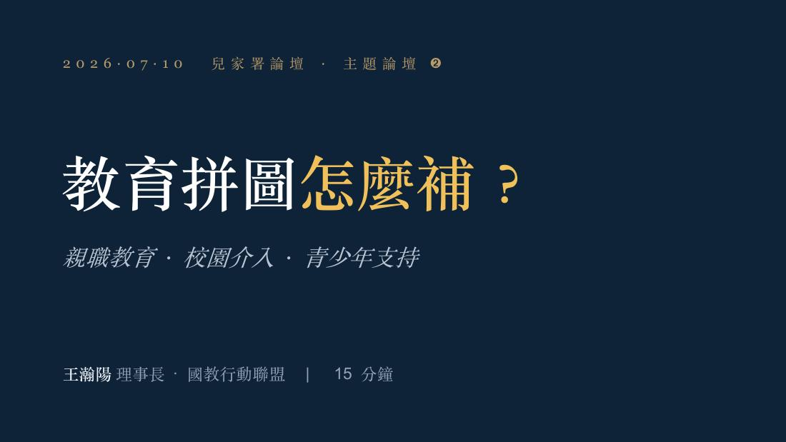
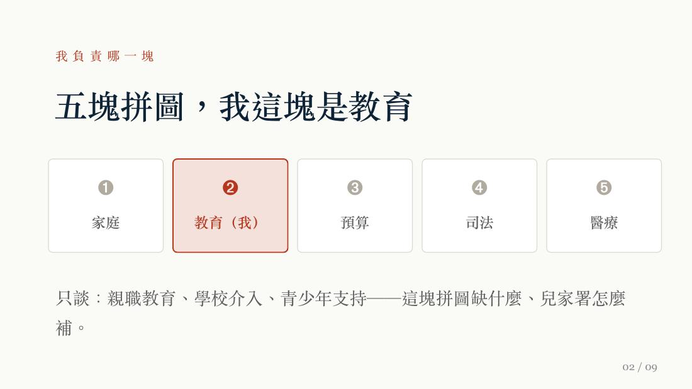
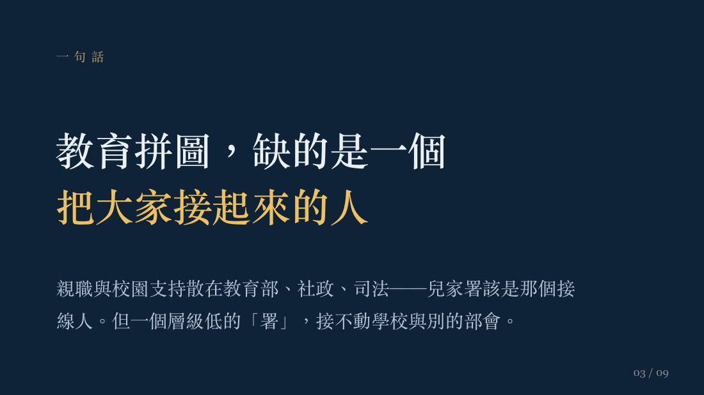
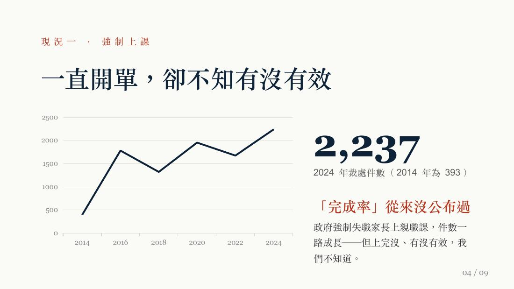
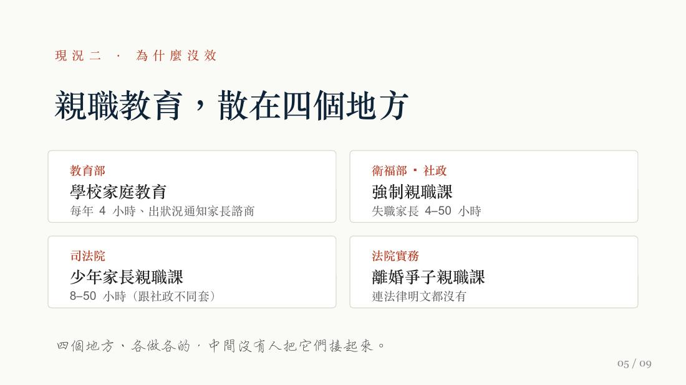
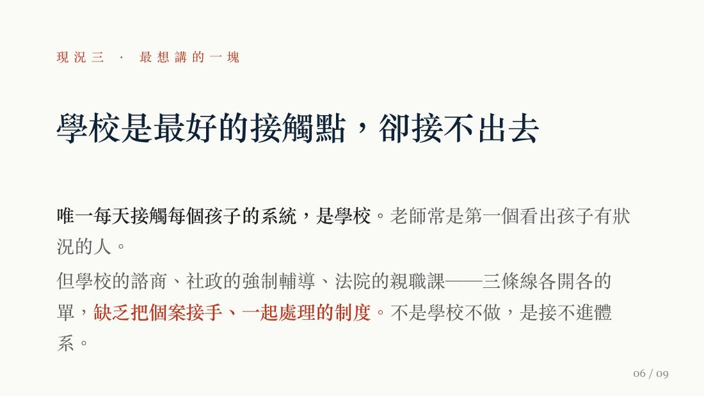
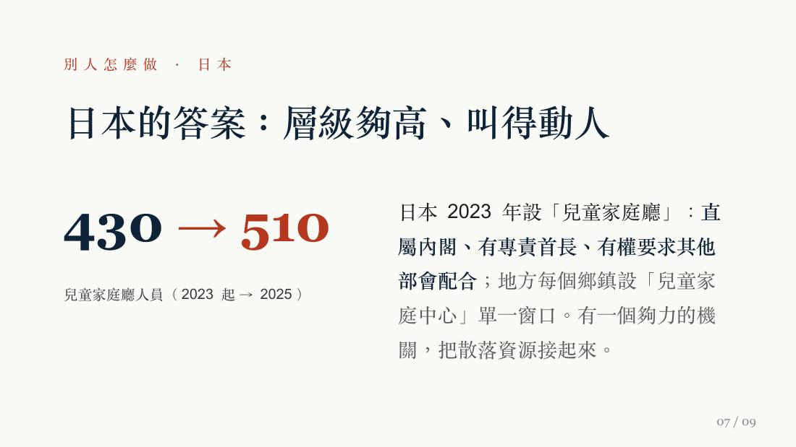
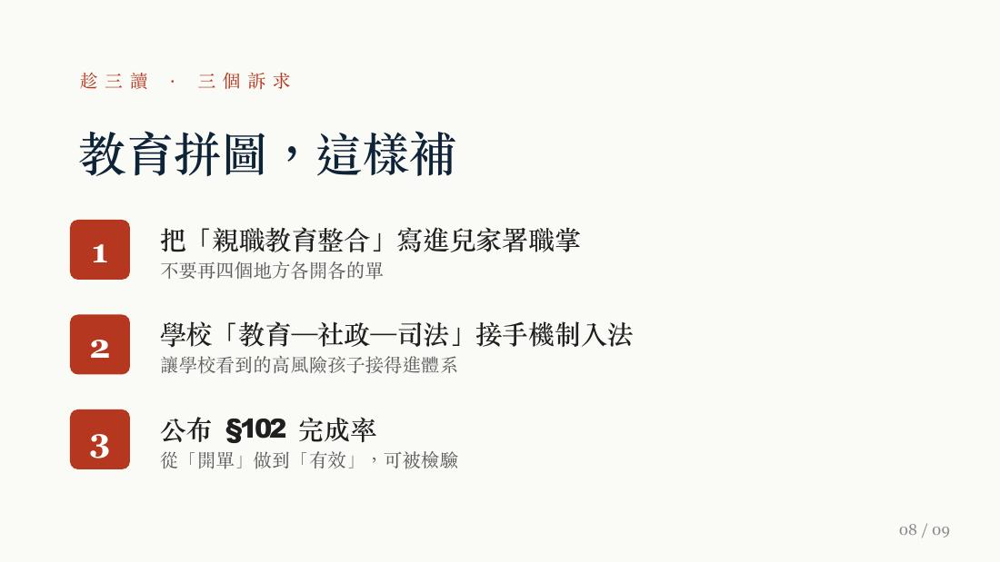
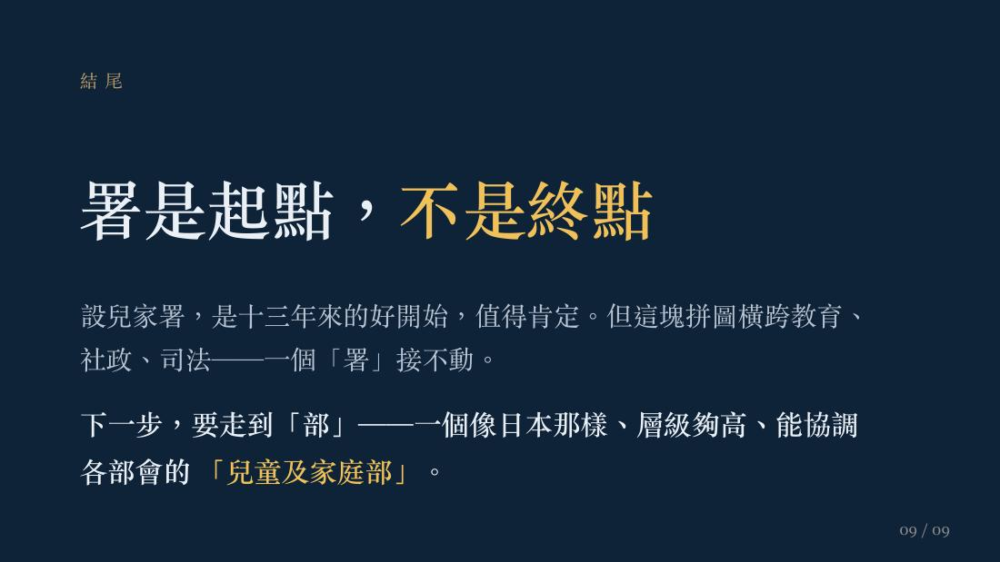

拼圖 02 · 教育 · The Education Piece
The Education Piece
教育拼圖怎麼補？
親職教育、校園介入與青少年支持——缺的不是更多表格，而是「把大家接起來的人」。
王瀚陽理事長從教育現場指出，教育拼圖缺的不是更多表格，而是「把大家接起來的人」。學校是每天接觸孩子的第一線，老師常最早看見拒學、情緒、行為或家庭壓力訊號——但學校輔導、社政強制親職教育、法院親職課與少年司法仍各走各的路。
Core Thesis · 核心論述
- 缺的是「接線人」。教育拼圖缺的不是更多表格或制度，而是把散落各系統的支持接起來的人與機制。
- 開單成長、成效不明。2024 年違反兒少權法的親職教育裁處達 2,237 件，較 2014 年 393 件、十年增逾 5 倍，但完成率與成效未形成清楚公開的檢驗。
- 四條線各走各的。學校輔導、社政強制親職教育、法院親職課與少年司法各自為政，高風險孩子接不進體系。
- 整合須入制度。兒家署若要真正有用，必須把親職教育整合與學校、社政、司法接手機制寫入制度。
學校是每天接觸孩子的第一線，老師常是最早看見孩子拒學、情緒、行為或家庭壓力訊號的人；兒家署若要真正有用，必須把親職教育整合與跨系統接手機制寫入制度。
王瀚陽 國教行動聯盟 理事長
演講影片 · Watch
本場完整演講影片（含字幕）——「我們一直對父母開單，卻沒教會父母怎麼教孩子」。無法播放時可 前往 YouTube 觀看 →
簡報投影片 · Slides
共 9 張，由講者提供、原樣呈現。點擊任一張可放大檢視。 ｜ ⬇ 下載本場簡報 PDF
01

02
03
04
05
06
07
08
09
三盟共同呼籲 · 教育相關
呼應本場，三盟主張把親職教育整合與學校、社政、司法接手機制寫入兒少權法修法，並公開親職教育完成率與成效，讓政策從「有沒有做」走向「有沒有用」。
→ 回論壇手冊看完整三項行動